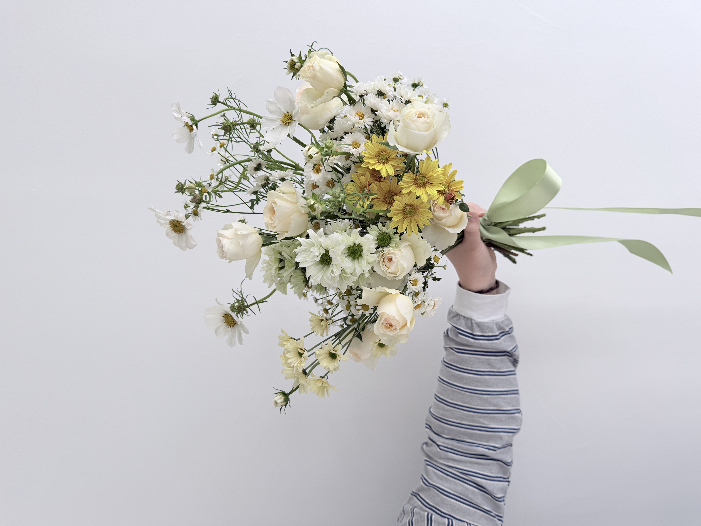
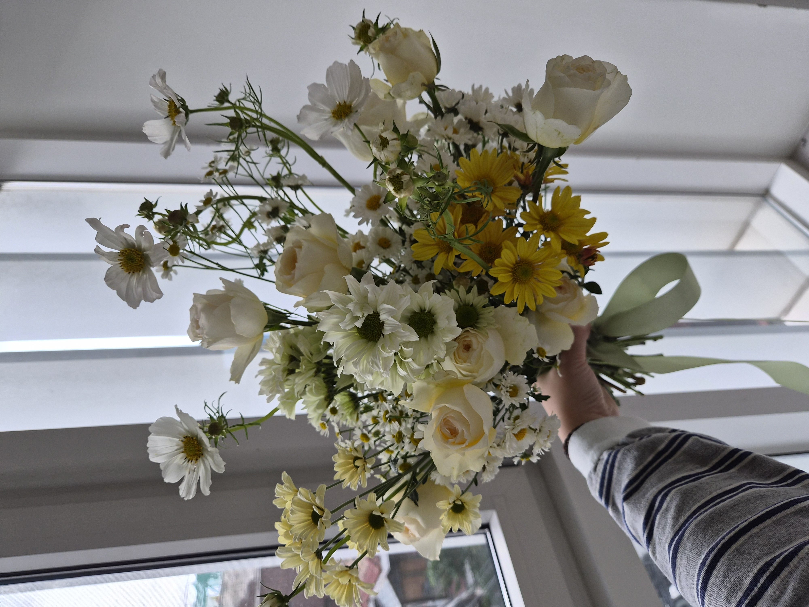
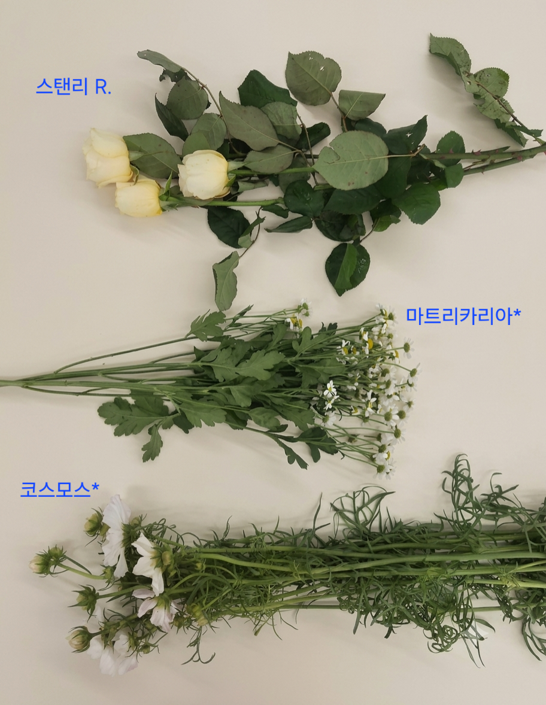
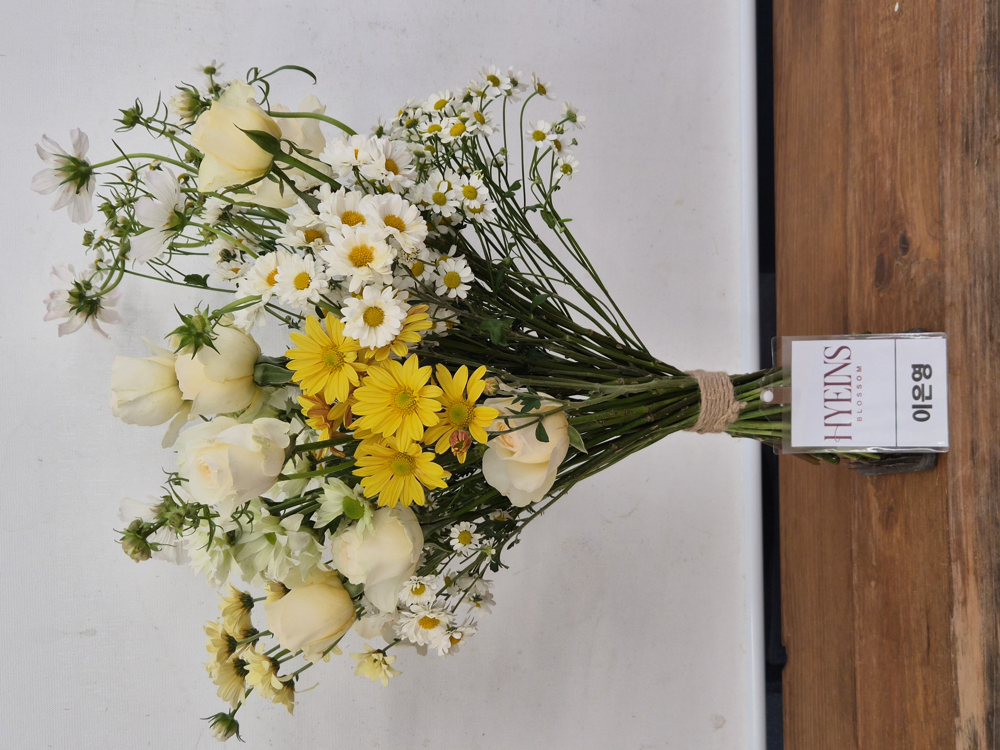
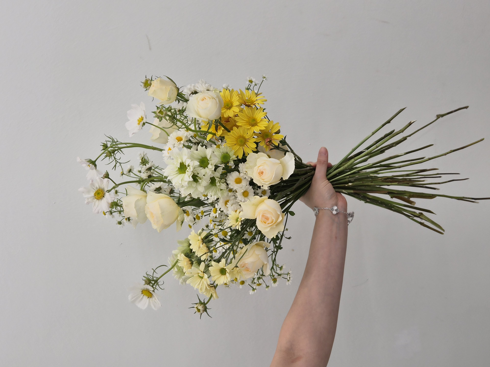
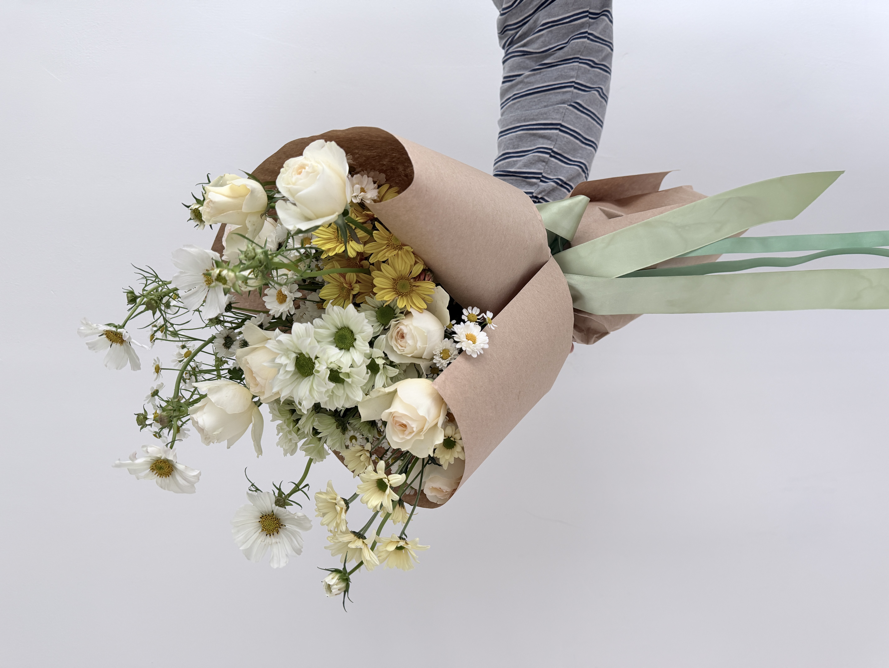
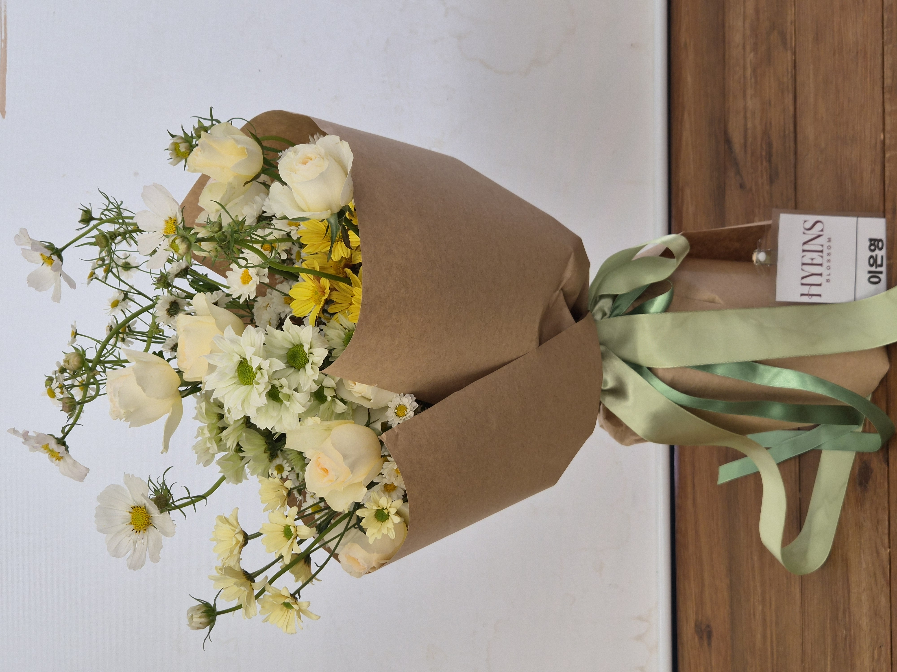
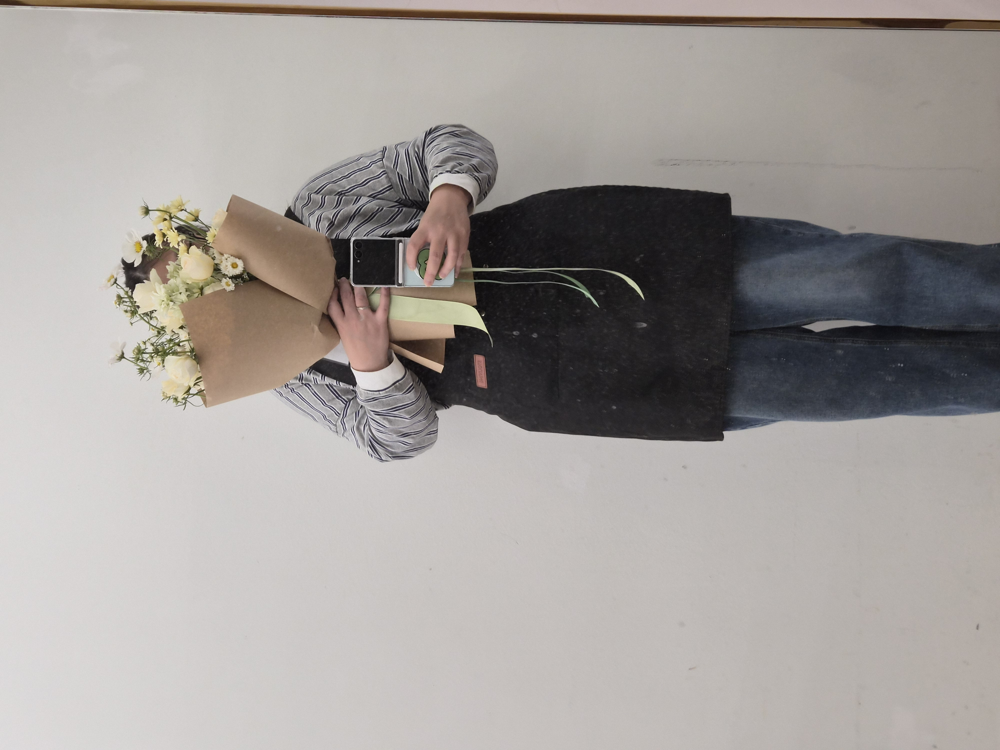

CLASS WORK · HAND-TIED
2026.10.20
MILLE DE FLEUR
HAND-TIED BOUQUET
多彩な花を重ねる構成
09 / CLASS WORK
CONCEPT
LAYERS,
DENSITY
& AIR.
서로 다른 크기와 표정의 꽃을 한 화면 안에 풍성하게 겹치되, 각 소재가 완전히 묻히지 않도록 높이와 밀도를 달리한 밀드플뢰르 핸드타이드 부케입니다. 아이보리 장미가 큰 면을 만들고, 크림과 옐로 계열의 작은 꽃을 반복해 부드러운 색 안에서도 여러 층의 리듬이 보이도록 구성했습니다.
코스모스는 중심보다 높게 올려 상단의 공기와 움직임을 만들고, 마트리카리아처럼 작은 꽃은 중심과 외곽을 이어 주는 연결점으로 사용했습니다. 꽃의 수가 많아도 하나의 덩어리처럼 무겁게 닫히지 않도록 선이 보이는 부분과 비어 있는 공간을 함께 남기는 데 집중했습니다.
大きさや表情の異なる花を豊かに重ねながら、 それぞれの花が埋もれないよう高さと密度に差をつけたミル・ド・フルールのハンドタイドブーケです。 アイボリーのバラで大きな面をつくり、クリームとイエロー系の小花を繰り返して、 やわらかな色の中にも複数の層とリズムが見えるように構成しました。 コスモスは中心より高く配置し、上部に空気と動きを加えています。
COLOR PALETTE
色の構成
IVORY,
YELLOW,
GREEN.
아이보리와 크림 화이트를 넓은 바탕으로 두고, 버터 옐로우와 선명한 옐로우를 여러 크기로 반복해 따뜻한 대비를 만들었습니다. 그린은 줄기와 꽃받침에서 자연스럽게 드러나며 밝은 꽃색을 정리하고, 완성 단계의 크라프트 포장은 전체 색을 한층 차분하게 묶어 줍니다.
アイボリーとクリームホワイトを広いベースにし、 バターイエローと鮮やかなイエローを異なる大きさで繰り返して温かいコントラストをつくりました。 グリーンは茎や萼から自然に現れ、明るい花色を整えます。 仕上げのクラフトラッピングが全体を落ち着いた印象にまとめています。
PETAL IVORY
#F2E9D8BUTTER CREAM
#E6D5A1GOLDEN YELLOW
#D6A70ESTEM GREEN
#60704CKRAFT BROWN
#A77B5C
자연광에서는 아이보리와 크림 사이의 미세한 톤 차이, 옐로 꽃이 만드는 깊이, 그리고 코스모스의 가는 줄기가 만드는 앞뒤 간격이 더 또렷하게 드러납니다.
自然光の中では、アイボリーとクリームのわずかな色差、 イエローの花がつくる奥行き、そしてコスモスの細い茎による前後の間隔がより明確に見えます。
MATERIALS
使用花材
소재 기록에서 확인되는 스탠리 장미, 마트리카리아, 코스모스를 중심으로, 완성 작품에 보이는 크림·옐로 계열의 소화를 함께 겹쳤습니다. 장미는 넓은 꽃면으로 중심의 무게를 만들고, 작은 데이지형 꽃과 마트리카리아는 서로 다른 크기의 반복으로 밀도를 연결합니다. 코스모스는 가는 줄기와 열린 꽃 얼굴로 위쪽의 선과 공기를 담당합니다.
花材記録で確認できるバラ ‘スタンリー’、マトリカリア、コスモスを中心に、 完成作品に見られるクリーム・イエロー系の小花を重ねています。 バラは広い花面で中心の重さをつくり、 小さなデイジー状の花とマトリカリアが異なる大きさの反復で密度をつなぎます。 コスモスは細い茎と開いた花面で上部のラインと空気をつくります。
스탠리 장미
バラ ‘スタンリー’
크림·옐로 계열 소국
クリーム・イエロー系のマム
마트리카리아
マトリカリア
코스모스
コスモス
MIXED FLOWERS
+ LAYERED HEIGHT
多彩な花の重なりと、
高低差による構成。

큰 장미의 꽃면, 작은 마트리카리아의 반복, 그리고 코스모스의 가는 선처럼 서로 다른 스케일의 소재를 섞는 것이 이번 작업의 기본 구조를 만듭니다.
大きなバラの花面、小さなマトリカリアの反復、 そしてコスモスの細いラインなど、異なるスケールの花材を重ねることが 今回の構成の基本になっています。

포장 전에는 장미가 만드는 큰 면과 작은 꽃의 반복, 코스모스가 위로 올라가는 높이 차가 직접적으로 보여 밀드플뢰르 특유의 풍성한 겹침이 가장 분명하게 읽힙니다.
ラッピング前は、バラの大きな花面、小花の反復、 コスモスが上へ伸びる高低差が直接見え、 ミル・ド・フルールらしい豊かな重なりが最も分かりやすく現れます。
COMPOSITION
構成とバランス
LAYER,
HEIGHT,
RHYTHM.
중심부는 장미와 크림·옐로 계열의 꽃을 비교적 가까운 간격으로 겹쳐 풍성한 밀도를 만들고, 그 사이에 작은 흰 꽃을 반복해 시선이 한 곳에만 멈추지 않도록 했습니다.
코스모스는 중심보다 높게 올리고 방향을 서로 다르게 두어 상단의 실루엣이 일직선으로 정리되지 않도록 했습니다. 큰 꽃, 중간 크기의 꽃, 작은 꽃이 여러 높이에서 반복되면서 한 종류의 꽃이 지배하기보다 전체가 함께 읽히는 구성을 만들었습니다.
꽃의 수가 많은 작업일수록 중심이 무거워지기 쉬워 외곽의 작은 꽃과 가는 줄기 사이에 여백을 남겼습니다. 이 열린 공간이 풍성함 속에서도 답답하지 않은 인상을 유지해 줍니다.
中心部はバラとクリーム・イエロー系の花を比較的近い間隔で重ねて密度をつくり、 その間に小さな白い花を繰り返して視線が一か所に止まらないようにしました。 コスモスは中心より高く、方向を変えて配置し、 大・中・小の花が複数の高さで繰り返される構成にしています。 花数が多くても重く閉じすぎないよう、外側には細い茎と余白を残しました。

SCALE & LAYER
FULL CENTER,
LIGHT TOP
& OPEN LINE.
실제로 들었을 때는 중심의 풍성한 볼륨과 위쪽의 가벼운 코스모스가 서로 다른 밀도로 나뉘는 모습이 더 명확하게 보입니다. 아래는 안정적으로 묶고 위쪽은 느슨하게 열어 두어, 꽃의 양이 많아도 전체 실루엣이 무겁게 가라앉지 않도록 했습니다.
実際に持つと、中心の豊かなボリュームと上部の軽いコスモスが 異なる密度で分かれていることがより明確に見えます。 下部は安定させ、上部はゆるく開くことで、 花数が多くてもシルエットが重く沈まないようにしました。
FINAL VIEW
完成したかたち

크라프트 포장은 아이보리와 옐로 꽃을 따뜻하게 받쳐 주고, 세이지와 민트 계열 리본은 줄기의 그린과 자연스럽게 연결됩니다. 포장선은 꽃의 외곽을 완전히 감싸기보다 일부 높이를 열어 두어 코스모스와 작은 꽃의 가벼운 실루엣이 계속 보이도록 했습니다.
クラフトラッピングはアイボリーとイエローの花を温かく受け止め、 セージ・ミント系のリボンは茎のグリーンと自然につながります。 花の外周を完全に包み込まず上部を開けることで、 コスモスと小花の軽いシルエットが残るように仕上げました。

WRAPPED DETAIL
KRAFT FRAME,
SOFT GREEN
& YELLOW.
완성 포장에서는 크라프트의 매트한 질감이 꽃의 밝은 색을 정리하고, 서로 다른 폭과 톤의 그린 리본이 단정한 마감 안에 가벼운 움직임을 더합니다. 포장 자체가 장식의 중심이 되기보다 꽃의 풍성한 질감과 높이를 받쳐 주는 프레임처럼 작동하도록 구성했습니다.
仕上げでは、クラフト紙のマットな質感が明るい花色を整え、 幅と色味の異なるグリーンのリボンが端正な仕上がりの中に軽い動きを加えます。 ラッピング自体が主役になるのではなく、 花の豊かな質感と高さを支えるフレームとして機能するようにまとめました。

인체 스케일과 함께 보면 부케의 폭과 세로 길이, 그리고 길게 내려오는 리본까지 포함한 전체 비율을 확인할 수 있습니다.
人のスケールと合わせて見ると、ブーケの幅と縦の長さ、 そして長く垂れるリボンを含めた全体のバランスを確認できます。
REFLECTION
制作を振り返って
DENSITY,
VARIATION,
CONTROL.
밀드플뢰르처럼 다양한 꽃을 많이 사용하는 작업은 소재를 더하는 것보다 각 꽃이 보일 자리를 남기는 것이 더 중요하다는 점을 확인했습니다. 비슷한 컬러 안에서도 꽃의 크기와 중심색, 줄기의 길이가 달라지면 충분한 변화와 깊이를 만들 수 있었습니다.
특히 중심부의 밀도를 높이면서도 코스모스와 작은 꽃이 만드는 가벼운 선을 잃지 않도록 높이와 간격을 계속 조절하는 과정이 중요했습니다. 다음에는 꽃의 수를 유지하면서도 중심의 겹침을 조금 더 정리해 한 송이씩의 표정이 더 선명하게 보이는 구성을 만들어 보고 싶습니다.
ミル・ド・フルールのように多くの花を使う制作では、 花材を足すこと以上に、それぞれの花が見える場所を残すことが重要だと感じました。 似た色調の中でも、花の大きさ、中心の色、茎の長さを変えることで 十分な変化と奥行きをつくることができました。 中心の密度を保ちながら、コスモスと小花の軽いラインを失わないよう 高さと間隔を調整することが特に重要でした。
풍성한 꽃 수는 유지하면서 중심부의 겹침을 조금 더 정리해, 각 꽃의 얼굴과 높이 차가 더욱 선명하게 읽히는 밀드플뢰르 실루엣 만들기